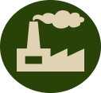
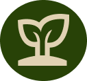

ENERGIA PARA TODOS
Parte dos resíduos seria processada em um digestor anaeróbico para produzir biogás, utilizado para gerar eletricidade e calor para a comunidade.

OBJETIVOS
O objetivo deste projeto é promover sustentabilidade, educação sobre compostagem e reciclagem, e reduzir os lixos nos aterros sanitários.
NUTRINDO O SOLO
Envolve a coleta de resíduos orgânicos de cada casa, que seriam levados para uma estação de compostagem comunitária para criar solo nutritivo.